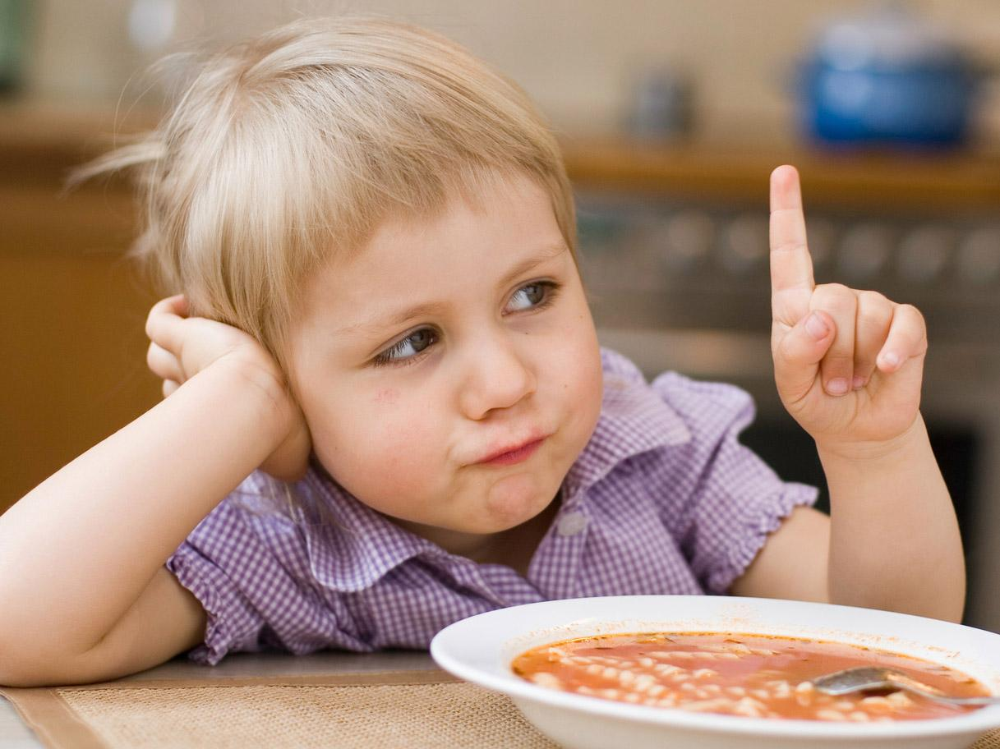

Rifiuto
È comune tra i bambini rifiutare alimenti come verdure, legumi e frutta nonostante gli sforzi dei genitori che continuano a prepararle nella speranze di vedere un giorno il piatto pulito. Tutti gli alimenti che il bambino rifiuta sono quelli che i genitori non gli hanno fatto conoscere o non gli hanno più proposto dopo il secondo, terzo rifiuto. E’ bene considerare che non è mai tardi per provare e soprattutto non lo deve essere quando si tratta di alimenti come frutta e verdura, importanti per l’apporto di fibra alimentare, che aiuta il senso di sazietà, permettendoci quindi di ridurre l’intake calorico, oltre ad avere il beneficio di migliorare il quadro glicemico e lipidico riducendo a livello intestinale l’assorbimento di colesterolo e glucosio. Quindi non stancatevi mai di riproporre quegli alimenti tanto odiati senza però mai forzare il bambino perché, se forzandolo dovesse vivere un’esperienza negativa con quell’alimento, allora siamo sicuri che non vorrà assolutamente più vederlo. Quello che spaventa i bambini sono i sapori e gli odori che non sono famigliari, che non ha mai sentito e provato. Per questo potrebbe essere d’aiuto farlo cucinare assieme ai genitori, così che possa sporcarsi le mani, che possa sentire la consistenza dell’alimento e iniziare a conoscerlo. Forse in questo modo quell’alimento lo spaventerà un po’ meno e poi, al termine della cucinata, si può assaggiare tutti insieme quello che si è preparato. Altro trucco è quello di proporre l’alimento rifiutato in cucinato in maniera diversa.

Le verdure per esempio possono essere gratinate così che il pane grattugiato possa coprirne un po’ il sapore, permettendo al bambino di assaggiarle. Allo stesso modo il pesce può essere condito con qualche cucchiaio di pomodoro così da renderlo più appetibile. Va ricordato inoltre che il cibo non è solo uno strumento grazie al quale soddisfiamo il nostro bisogno di nutrirci. Alimentazione è socializzazione. È un occasione per stare insieme e, non a caso, i momenti più felici della nostra vita sono accompagnati da un bel banchetto. Quindi il momento del pasto diventa un momento di condivisione per la famiglia, un modo per i genitori di interessarsi al mondo del proprio figlio, soprattutto se lo vedono poco a causa del lavoro. Chiacchierare mentre si mangia crea un clima di allegria che può incentivare il bambino ad assaggiare un nuovo alimento. Il problema degli orari lavorativi dei genitori, che impegnano molte ore della giornata, sta diventando sempre più importante. Sono molti i papà e le mamme che hanno solo il pasto come occasione per vedere i loro figli. È per questo importante stabilire come regola quella di non usare telefoni e tablet quando si mangia. L’utilizzo di questi dispositivi elettronici durante il pasto può distogliere l’attenzione dal cibo e, senza nemmeno accorgersene, si è mangiato in quantità eccessiva rispetto a quelle che sono le nostre necessità. Per farsi perdonare il poco tempo dedicato ai figli, a causa degli impegni della vita quotidiana, i genitori pensano di poter far leva sul cibo, consentendo loro di mangiare qualsiasi cosa; il cibo diventa uno strumento per elargire affetto. Ma non è così: l’amore dei figli non si compra certo con il cibo e permettere al bambino di mangiare ciò che vuole è dannoso per la sua salute. Spesso dietro a un bambino con problemi di peso si celano genitori che sperano di sentirsi gratificati concedendo un cioccolatino di più al proprio figlio. A questi genitori allora va ricordato quanto sia importante saper dire di no, perché per quel no il bambino, può momentaneamente disperarsi, ma quando sarà un adulto sano potrà sicuramente ringraziarvi. Verosimilmente vi ringrazierà anche se quel poco tempo che avete a disposizione con lui lo trascorrerete facendo qualche attività insieme, magari all’aperto. I bambini di oggi sono sempre più sedentari e preferiscono un videogioco ad una partita di calcio. È quindi importantissimo spronare i propri figli a compiere attività fisica che aiuta a controllare il peso corporeo ed ha un impatto positivo sull’assetto glicemico. Affiancando una sana alimentazione e l’attività fisica il gioco è quasi fatto, ci manca solo un pizzico di impegno e di costanza; uno piccolo sforzo che sicuramente i genitori avranno voglia di compiere per poter garantire la salute dei propri figli.